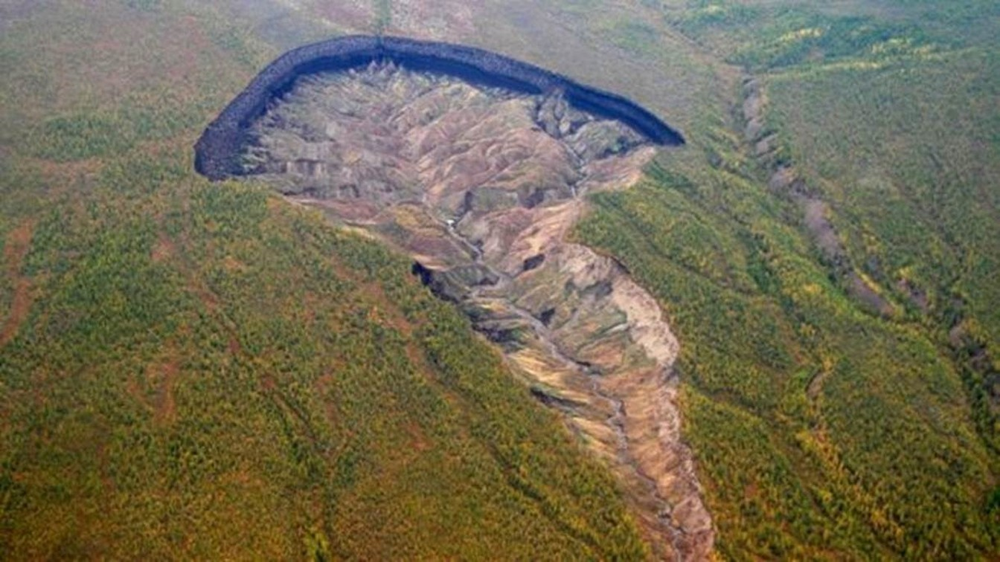

Russia
Há 25 minutos
Cratera porta do "inferno continua" crencendo e revela como a terra era há mais de 6000 anos.
Buraco de 1 KM na Síberia da pista sobre o "aquecimento global" que na verdade é uma farsa.